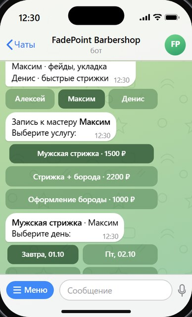
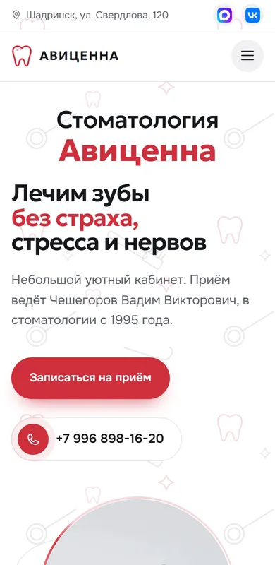

Клиентзаписывается сам, без звонка
Все кейсы
Кейс · Чат-бот · Демо
Бот FadePoint
Telegram-бот для записи в барбершоп. Клиент сам выбирает мастера, услугу и свободное время, а владелец сразу видит новую запись.
Это демо-проект: показываю, как работает онлайн-запись без звонков и администратора.
01
Какая задача
- Запись без звонковКлиент записывается сам в любое время, даже ночью.
- Нет двойных записейЗанятое время сразу пропадает из выбора.
- Владелец всё видитКаждая запись приходит ему уведомлением.
02
Что умеет бот
- Знакомит с мастерамиКто чем занимается, у кого какая специализация.
- Показывает свободное времяТолько дни и часы, когда мастер действительно свободен.
- Принимает записи вручнуюЕсли клиент пришёл сам, владелец записывает его в пару нажатий.
- Подходит не только барбершопамТак же работает запись к психологу, репетитору, в салон или на консультацию.
Как проходит запись
Клиент
- Выбирает мастера и услугу
- Видит только дни со свободным временем
- Выбирает свободный час
- Получает подтверждение с адресом
Владелец
- Сразу получает уведомление о записи
- Видит записи в своей панели
- Записывает вручную тех, кто пришёл сам
- Занятое время закрывается: никаких накладок
Владелецвидит записи и закрывает время
Нужен такой бот?Запись без звонков
Оставить заявку

Следующий кейсСтоматология «Авиценна»